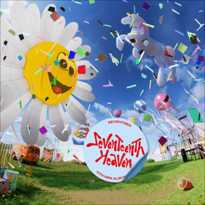

<!DOCTYPE html>
<html></html>
<head>
    <meta name="viewport" content="width=device-width, initial-scale=1">
    <link rel="stylesheet" href="biografi.css">
<title>Biografi Woozi Seventeen</title>
</head>
<body>
<section1> 
<h1 style= text-align:center;>Say the name! Seventeen</h1>
    <div style="margin: 0px;">
        
    </div>
</section1>
<section2>
    <article>
        <p>Woozi (우지) dengan nama asli  Lee Jihoon (이지훈)(lahir 22 November 1996) adalah seorang penyanyi, penulis lagu dan produser Korea Selatan di bawah kontrak Pledis Entertainment Ia adalah anggota grup vokal laki-laki SEVENTEEN dan ketua tim vokal.</p>
        <div class="woozi">
            
            
            
        </div>
        <p>Seventeen sendiri adalah sebuah boy band asal Korea Selatan yang dibentuk oleh Pledis Entertainment. Grup yang terdiri dari 13 anggota ini dibagi berdasarkan spesialisasi keahlian masing-masing ke dalam 3 sub-unit; hip-hop unit, vocal unit, dan performance unit. Grup ini dikenal dengan sebutan Self-producing idol karena keterlibatan anggotanya dalam penyusunan, pengembangan, dan pembuatan lagu serta koreografi. Grup tersebut resmi Debut dengan lagunya yang berjudul Adore U pada tahun 2015.</p>
        <p>Lahir di Busan, Korea Selatan, Woozi memiliki anggota keluarga kedua orang tua. Pada masa pertumbuhannya, dia tidak berteman dengan perempuan, itulah mengapa dia hanya merasa nyaman dengan laki-laki, karena dia akan menjadi sangat malu jika berbicara dengan perempuan atau mencoba untuk berteman dengan mereka. Masa Kecil Woozi tumbuh dengan menekuni musik. Saat kecil, dia sering bermain musik klasik dan telah mempelajari cara memainkan klarinet dan beberapa instrumen musik lainnya. Tapi, dia kurang percaya dengan kemampuan vokalnya, dia selalu tidak percaya ketika orang lain mengatakan kalau dia adalah seorang penyanyi yang bagus. Saat Woozi lolos dalam audisi Pledis Entertainment, dia merasa sangat berterimakasih karena telah mendapatkan kesempatan itu. Dia terus berlatih keras setiap hari hingga dia debut</p>
        <p>Pada tanggal 26 Mei 2015, Woozi memulai debutnya dalam grup yang memproduksi sendiri, Seventeen, dengan single “Adore U”. Dia membantu menulis dan memproduksi setiap lagu dalam album extended play (EP) debut mereka, 17 Carat. Sejak saat itu, ia menjadi produser utama Seventeen bersama dengan Bumzu dan dikreditkan untuk menulis lebih dari 80% dari diskografi grup pada Januari 2019. Tak lama kemudian, Woozi mulai menulis untuk artis lain juga. Pada tahun 2016, ia dan Ailee menulis lirik untuk kolaborasinya dengan Eric Nam, “Feelin'”. Pada tahun 2017, Woozi menulis single terakhir yang dirilis oleh grup proyek I.O.I, “Downpour”, yang liriknya mendapat pujian. Kemudian pada tahun yang sama, dia menghadiahkan lagu “Thankful for You” (지금까지 행복했어요) kepada penyanyi Korea Selatan Baekho dari boyband NU'EST W, yang ditampilkan dalam album mini pertama grup tersebut, Here. Woozi menjadi anggota penuh Asosiasi Hak Cipta Musik Korea pada tahun 2019. Pada 15 Oktober 2019, Woozi merilis lagu “Miracle” untuk soundtrack serial televisi The Tale of Nokdu.</p>
        <p>Pada tahun 2021, ia bekerja sama dengan sesama anggota Seventeen, Hoshi, dalam lagu “Spider”, yang memulai debutnya di posisi lima di tangga lagu Billboard World Digital Song Sales. Pada tahun itu, Woozi memenangkan Produser Terbaik di Asia Artist Awards ke-6, menjadi penerima penghargaan termuda dalam sejarah acara tersebut.</p>
    </article>
</section2>
<section3>
    <p style="font-family: monospace;
    font-size: 15px; text-align: center;">Sebagai anggota seventeen, Woozi telah mengantongi hak cipta lebih dari 80% album seventeen. berikut ini album karya seventeen terbaru!</p>
   <div class="albums">
    <div id="album">
        <div class="desc">Face The Sun</div>
        
    </div>
    <div id="album">
        <div class="desc">FML</div>
        
    </div>
    <div id="album">
        <div class="desc">Seventeenth Heaven</div>
        
    </div>
    <div id="album">
        <div class="desc">17 Is Right Here</div>
        
    </div>
   </div>
</section3>
<section4>
    <p style="font-family: monospace;
    font-size: 15px; text-align: center; font-size: large;">
    <b>Pada Saat Asia Artist Award 2021, Woozi mengantongi penghargaan Best Produser dengan kepemilikan hak cipta lebih dari 150 lagu ciptaannya di umurnya yang ke 25, menjadikan woozi salah satu producer termuda dengan lebih dari 150 lagu hak cipta
    </b></p>
    <div class="container0">
        <div class="container1">
            <p style="font-size: 20px;"><b>PENGHARGAAN BEST PRODUCER</b></p>
            <iframe width="560" height="315" src="https://www.youtube.com/embed/-rYzgw0i6KM?si=xUzQFgzrfLqCB8lD" title="YouTube video player" frameborder="0" allow="accelerometer; autoplay; clipboard-write; encrypted-media; gyroscope; picture-in-picture; web-share" referrerpolicy="strict-origin-when-cross-origin" allowfullscreen></iframe>
        </div>
    </div>
</section4>
<h3>Reference</h3>
    <a href="https://id.wikipedia.org/wiki/Seventeen_(grup_musik_Korea_Selatan)#Penghargaan_dan_Nominasi" target="_blank">Seventeen</a>
    <a href="https://id.wikipedia.org/wiki/Woozi" target="_blank">Woozi</a>

</body>
</html>
